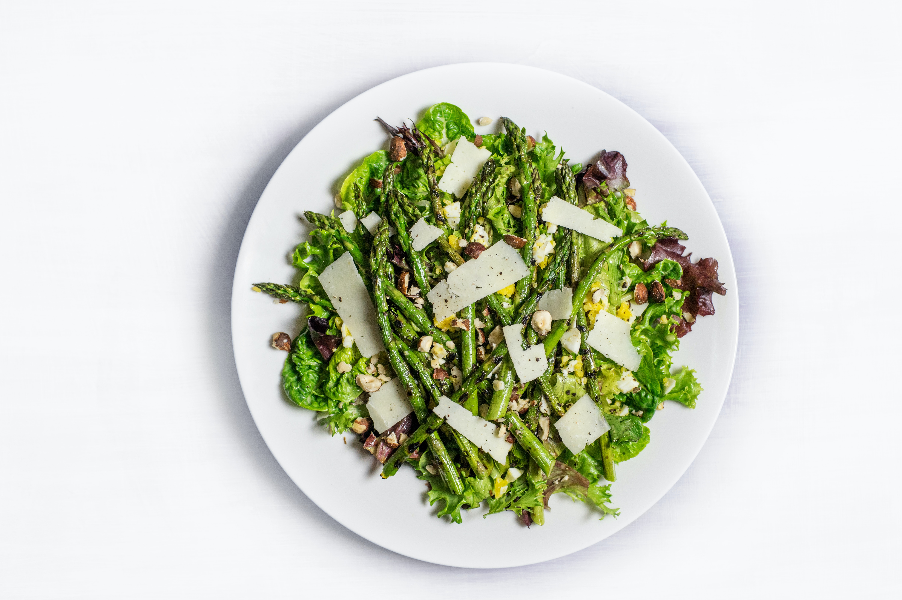

Fersh connection, one salad at a time
新鮮なつながりを、ひとつのサラダから
Fresh
Concept
健康と交流を促進する、サラダをテーマに交流
「Salad Meeting」のコンセプトは健康的な食生活を促進しながら、ビジネスや社会人交流の場を提供することです。
サラダは、栄養価の高い食材を組み合わせた健康的な食事であり、また、ビジネスや社会人交流の場での軽食としても人気があります。Salad Meetingでは、健康的な食事を通じて、ビジネスや社会人交流の場を提供し、参加者の健康と交流を促進します。
また、サラダの材料を組み合わせるように様々な業種や分野の人々が交流し、新しいアイデアやビジネスチャンスを生み出す場でもあります。
Service

Business
サラダを提供するビジネスランチイベント
健康的な食事を提供しながら、ビジネスや社会人交流の場を提供するイベントです。参加者は、自由にサラダの材料を選び、オリジナルのサラダを作りながら、楽しく交流することができます。

Recipe
サラダレシピの共有プラットフォーム
サラダの作り方や材料の組み合わせなど、サラダに関する情報を共有するプラットフォームです。ユーザーは、自分が作ったオリジナルのサラダレシピを投稿し、他のユーザーと情報を共有することができます。

Event
サラダに関するイベント情報の提供
サラダに関するイベント情報を提供するサービスです。例えば、サラダのフェスティバルやサラダのレシピコンテストなど、サラダに関するイベント情報を提供し、ユーザーが新しいサラダのレシピを学んだり、サラダに関する情報交換をすることができます。
Company
- 会社名
- 株式会社サラダ会議 salad meeting
- 所在地
- 東京都トマト区レタス南3丁目
- 設立
- 2023年7月6日
- 代表者名
- 更田 沙羅 🥗